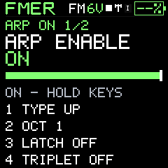
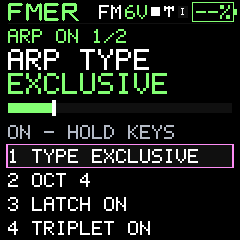
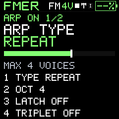

Patterns and performance
Arpeggiator
Turn held or latched notes into a rhythmic phrase.
Press ARP to enter the arpeggiator. Enable it, play several notes and set the type. Latch retains the note set after keys are released. Octaves extends the pitch span. Triplets changes the subdivision relationship. The second page holds division, tempo, gate and swing so those timing settings keep consistent positions.
The ten stored type codes are 0 Up, 1 Down, 2 Exclusive, 3 Played, 4 Inclusive, 5 Random, 6 Repeat, 7 Down exclusive, 8 Down inclusive and 9 Outside-in. Exclusive pendulum traversal avoids repeating the end notes at reversal; inclusive repeats them. Played follows input order. Random chooses from the available notes. Gate changes the sounding portion of each step and swing alternates timing.
- Hold a triad and choose Up.
- Set two octaves and a short gate.
- Enable latch and release the keys.
- Compare Exclusive and Inclusive to hear the turnaround difference.
- For synchronization, choose the external clock source and send transport Start from the master.
Arp and sequencer share bounded voice and transport resources. A stopped external clock or absent note set can legitimately produce silence. MIDI output routing determines whether generated arp notes are sent to another instrument.
Capture the generated phrase
Choose the target track and pattern, enable the arp, then press REC on the ARP page. Four quiet quarter-note clicks lead into a shared downbeat; held or latched notes generate the recorded phrase. Existing Overdub/Replace applies; Step mode is changed to Overdub for this timed capture. REC again finishes capture while leaving the arp enabled. The pattern is mono and quantized to sixteenths: faster divisions, swing and Repeat chords are reduced to the last onset in each cell, not a lossless MIDI recording. Save the project to retain the take.
Strum (Type10) makes one ascending pass through the held chord. Rate sets spacing, Gate sets length, and a fresh key rearms the pass. Record from ARP to capture the generated notes.



